| |
|
|
|
|
|
|
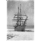 |
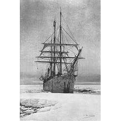 |
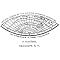 |
|
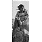 |
|
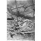 |
|
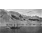 |
 But
when he was unable to secure backing
for his own forward-looking plans to explore Antarctica, Cook accepted
the
position of surgeon on the Belgian Antarctic Expedition, organized by
Adrien
de Gerlache, which sailed from Antwerp in August 1897. Cook
met the
expedition at Rio and sailed with it to the far southern ports of Chile
and
Argentina. There he had the opportunity to compare and
photograph members
of three tribes of primitive Indians who inhabited Tierra del
Fuego. Off
Harberton, the Belgica was caught on the rocks as
the tide ebbed and was nearly lost.
But she
escaped at the last moment and was able to continue her voyage to the
Antarctic,
where she entered Hughes Gulf and discovered and explored the islands
of
the Gerlache Strait, making 22 landings. On one of
these,
Cook participated in the first camping and sledging trip in
Antarctica.
Today a plaque at Buls Bay commemorates this event.
During the stay on Brabant Island, Cook climbed to the summit of one of
the peaks
in the Solvay Range, the highest of which is now named Cook
Summit.
During these landings, Cook took a series of excellent photographs of
the
unknown lands and continued his photographic record of the expedition
throughout
its duration.
But
when he was unable to secure backing
for his own forward-looking plans to explore Antarctica, Cook accepted
the
position of surgeon on the Belgian Antarctic Expedition, organized by
Adrien
de Gerlache, which sailed from Antwerp in August 1897. Cook
met the
expedition at Rio and sailed with it to the far southern ports of Chile
and
Argentina. There he had the opportunity to compare and
photograph members
of three tribes of primitive Indians who inhabited Tierra del
Fuego. Off
Harberton, the Belgica was caught on the rocks as
the tide ebbed and was nearly lost.
But she
escaped at the last moment and was able to continue her voyage to the
Antarctic,
where she entered Hughes Gulf and discovered and explored the islands
of
the Gerlache Strait, making 22 landings. On one of
these,
Cook participated in the first camping and sledging trip in
Antarctica.
Today a plaque at Buls Bay commemorates this event.
During the stay on Brabant Island, Cook climbed to the summit of one of
the peaks
in the Solvay Range, the highest of which is now named Cook
Summit.
During these landings, Cook took a series of excellent photographs of
the
unknown lands and continued his photographic record of the expedition
throughout
its duration.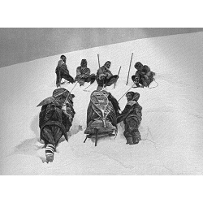 |
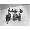 |
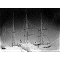 |
|
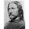 |
|
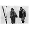 |
During that
time, Cook rose to the medical
crisis that developed among the crew, who showed signs of incipient
scurvy.
Taking his cue from the antiscorbutic effects of the raw meat diet he
had
observed among Greenland’s Inuit, he had the crew eat lightly
cooked seal
and penguin steaks, from which they obtained the nutrients needed to
stem
the progress of the disease.During the polar night of 70 days, he observed other physical and mental effects, which he correctly attributed to the absence of the sun.
He devised a
crude form of the light therapy that is now
used to treat what has come to be known as seasonal affective disorder,
alleviating
its debilitation by placing the afflicted crewmembers before an open
fire.
During the winter Cook joined with Roald Amundsen, who was the second
mate,
to design equipment. Cook’s ingenious medical
treatments, inventiveness,
and prior polar experience won over the reserved Norwegian’s
respect, and
he became Cook’s friend for life. 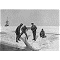 |
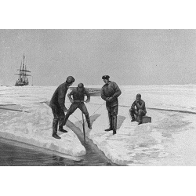 |
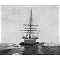 |
|
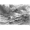 |
|
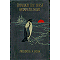 |
|
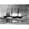 |
At first he
advocated digging
a series of shallow trenches filled with ashes from the boilers to try
to
melt the ice, then turned to sawing an actual passage for the ship
using
explosives and ice-saws. After a
monumental effort by
all hands, the escape passage was finished, only to be closed again by
ice
pressure. But it fractured again along a weak line and the
ship was
able to escape to a lake of open water in the pack.
Eventually, she worked her way to the open sea and returned to South
America
in March 1899. There Cook made additional
observations among the Onas and persuaded Thomas Bridges, a retired
English
missionary, to allow him to publish his dictionary of the Yahgan
language
as part of the expedition’s results.Cook returned to the United States in July and published an exclusive account of the voyage in the New York Herald, anticipating the official report by some months and causing some hard feelings in Belgium. Nevertheless, he, like all of the other officers, was awarded the Order of Leopold I by the King of the Belgians for his services. He then started to write a book-length account of his experiences, which was published in 1900 as Through the First Antarctic Night.
The book
showed Cook to
have a great deal of literary talent. It sold well and has
continued
to be a respected account of the Belgian Antarctic
Expedition. In 1901 Cook traveled to Brussels as part of the official commission meeting to arrange publication of the expedition's scientific results. There he became interested in the problems of mountain climbing through meetings with Sir Martin Conway and Edward Whymper. When he returned to America, he helped organize the American Alpine Club.
Herbert Bridgman, Secretary of the Peary Arctic Club, which sponsored Peary’s attempt to reach the North Pole in 1898, asked Cook to accompany the Club’s relief expedition aboard its steamer Erik, as second in command.
Upon arrival
in Greenland, Cook found Peary
suffering from the aftereffects of the loss of seven toes to frostbite
and
what Cook considered a poor dietary regime. He advised Peary
to return
to America to recover his health before making any further attempts at
the
Pole, but Peary refused and remained an additional year in the
Arctic. Cook did not travel outside of the US in 1902, and at first he seemed to have given up exploring. He married a rich widow, Marie F. Hunt, set up a well-equipped office in Brooklyn, and lectured widely on his Arctic/Antarctic experiences. But his eye was caught by an account of the expedition of Alfred Brooks, which had reached the foot of what many believed was North America’s highest mountain, Mount McKinley in Alaska.
| «- 1893-1894: Cook strikes out on his own | 1903-1906 Mount McKinley -» |